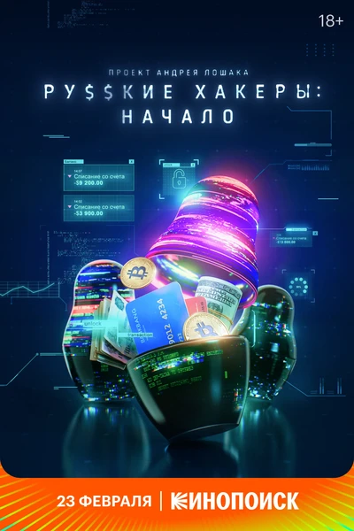

Документальный · 2021 · Документальный
Первый документальный фильм, показывающий русскоязычную хакерскую среду изнутри: среди его героев — и пионеры 90-х, писавшие вирусы «ради спортивного интереса», и основатели легальных компаний в сфере кибербезопасности, и анонимные фигуры из даркнета. Это история о культуре, сформировавшейся в условиях дефицита и благодаря качественному техническому образованию, а также о том, как это сообщество стало глобальной силой в обоих смыслах слова: от выступлений на сцене конференции DEF CON до попадания в списки наблюдения спецслужб. Уникальный материал, в котором хакеры говорят, не скрывая лиц.
The first documentary about the Russian-speaking hacker scene from the inside: its heroes range from 90s pioneers who wrote viruses 'for sport' to founders of legitimate security companies and anonymous darknet figures. It is about a culture that grew out of scarcity and technical education — and about how that scene became a global force in both senses: from DEF CON stages to intelligence watchlists. Rare material where hackers speak without masks.